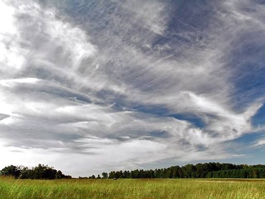
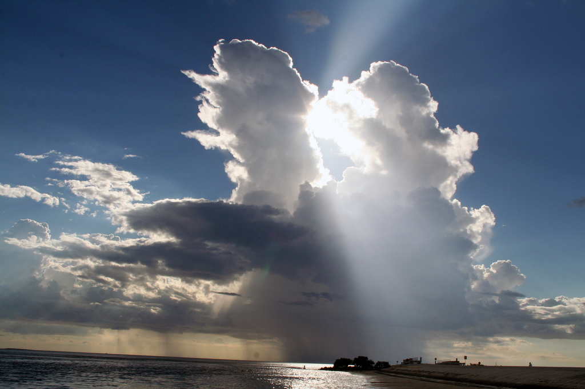

Kondisi Hari Ini
Pagi hari cerah, lalu menjelang sore langit berubah mendung karena awan tumbuh dan berpotensi hujan ringan.
🌡️
32°C
Suhu maksimum
❄️
24°C
Suhu minimum
💧
80%
Kelembapan
💨
10 km/jam
Angin Barat Daya
⏱️
1010 hPa
Tekanan udara
Data Cuaca Tiga Hari Terakhir
| Tanggal | Suhu Maks (°C) | Suhu Min (°C) | Kelembapan (%) | Curah Hujan (mm) |
|---|---|---|---|---|
| 22 November 2026 | 33.2 | 25.0 | 82 | 12 |
| 23 November 2026 | 31.8 | 24.5 | 88 | 35 |
| 24 November 2026 | 32.0 | 24.0 | 85 | 20 |
Jenis-Jenis Awan
Awan punya banyak bentuk, dan tiap bentuk menandakan kondisi cuaca yang berbeda.

Cirrus
Awan tinggi, tipis, seperti bulu. Biasanya tanda cuaca cerah, kadang pertanda perubahan cuaca.
Cumulus
Awan putih menggumpal seperti kapas. Tanda cuaca cerah, tapi bisa tumbuh menjadi awan hujan.
Stratus
Awan berlapis rendah berwarna abu-abu yang menutupi langit. Membawa langit mendung dan gerimis.

Cumulonimbus
Awan menjulang tinggi penghasil hujan lebat, petir, dan angin kencang.